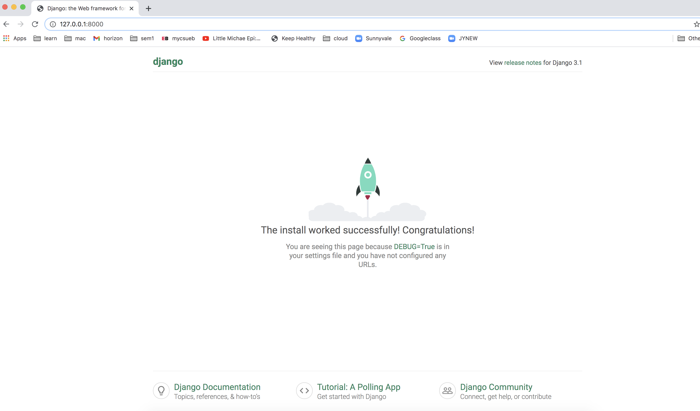
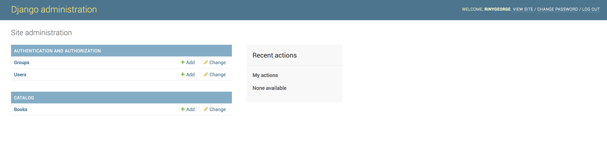
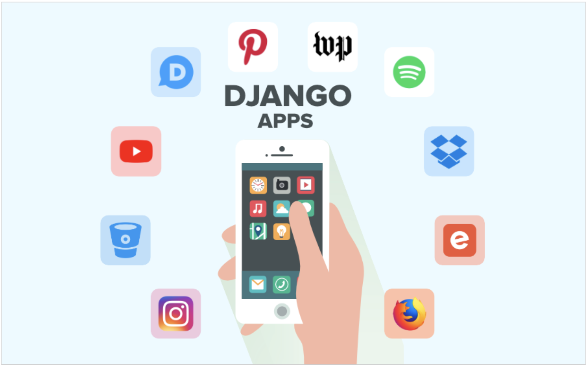

Let us take a look at what is a Web Framework? During end of 90's and beginning of 20's developers had to
write boiler plate code to build web applications. Each web applications were developed from scratch. This
approach was not scalable when it came to non-trivial web applications. Many questions arised:
How to reduce time taken to market, if you do every development from scratch?
How complex web pages like interacting with multiple databses can be developed?
How to reuse similar code across multiple applications?
How can developer concentrate on business logic rather than writing bolier plate code?
Web application frameworks are evolved to solve these problems. A web application framework is a programming
infrastructure for your applications, where the developer concentrates on busines logic. It also allows
reusing of features and also helps to write clean and maintainable code.
Django is one such framework with many features to make developer's life easy.
Django Framework :
is a free and open source framework that deals with a great part of the issue of web development,
such
that now you can concentrate completely on creating your application without bothering about remodeling a
pre-existing solution.
Django follows the "Batteries included" concept making it a complete product in itself. With this framework,
one can build nearly any type of website. Moreover, Django is capable of working with various categories of
client-side frameworks.
What you need
About 30 minutes.
Your favorite IDE or a text editor. For beginners Visual Studio Code is recommended.
Python: Django is written in the Python programming language. Make sure you have Python
installed.
Database: If you are developing a database application, you need to install Django supported
database. SQLite
database is coming with Python itself.
First Django project
In Djangot we often come across Projects and Apps. A project refers to the entire application and all its
parts.
An app refers to a submodule of the project.
Project Location
Create a project folder in a prefered location on your computer.
$ mkdir django_tutorial
Virtual Environment
Before installing Django, we have to create a self-contained directory, which is a Virtual environment. A
virtual environemnt separates your Python files for every project you create.
Go inside the project location (cd django_tutorial) to create the virtual environment using
following command.
django_tutorial$ python3 -m venv tutorialenv
Install Django
Now, since we created a virtual environment, next step will be to activate it using the below command.
In MacOS/Linux command-line
$source tutorialenv/bin/activate
In Windows Command-line
C:\Users\Name>tutorialenv/Scripts/activate
As soon as you find the prompt in your console having (tutorialenv) as prefix, this implies that your virtual
env has been initiated.
Finally, we are now ready to Install Django. There are 3 methods to install Django, the best being the one
using pip command which gives us the latest stable version of Django.
In MacOS/Linux command-line
(tutorialenv) ~django_tutorial$pip3 install django
In Window
command -line
(tutorialenv) C:\Users\Name>tutorialenv/Scripts>pip install django
Start the project
Let’s begin to build our First project. We need to start a new Django project.
This implies that we'll run a few scripts given by Django, that will make a skeleton of
Django project.
In order to start the project, follow these steps -
We now try to run our first project, just type in the following command on the console.
(tutorialenv) ~$ python manage.py runserver
Finally we have built our first website which is running on localhost.
In order to view this, just navigate to the following URL on your local web browser.
http://127.0.0.1:8000
You get to see your website running !!!

First Django App (mvc)
An app is a component or feature of the project. For example In an e-commerce project products abd cart can be
two apps. Use below command to create an App.
(tutorialenv) ~$ python manage.py startapp book
Model-View-Controller (MVC) is a design pattern used for web applications.
Design patterns are certain standards used in software development to standardise various components and its
interactions.
MVC is one such pattern which helps to keep the code for defining and accessing data (Model) separate from
request routing logic (Controller), which in turn is separate from the user interface (View).
Django Models
Django web applications access and manage data from databse and write to database through Python objects
known as models.
Once you have picked the database, for your app (which is supported by Django), you are free from
the burden of writing complex queries, as Django will manage all
communications with the database on your behalf.
A model is a class that enables to interact with a table in our DB, where each property of the class is
a field of the table.
In Django, model is the built-in component that Django uses to generate tables and fields.
Models are characterized in the app/models.py file.
Next step here is to include our newly created model Book to our database. But first we will have to
ensure Django knows the changes we did to our new model Book. In order to do this we need to make migrations
using following command.
Note: if you get an error 'PosixPath is not iterable', make below change.
In your settings.py file, use str() around DATABASES setting, i.e. 'NAME': str(BASE_DIR / 'db.sqlite3').
Django is now ready with the migration file which will now be added to our database once we type this command,
python manage.py migrate tutorial-site on the console.
Django Admin
Django has a built-in Admin tool with an interface, which can be used to administer the Django app.
The Django admin application uses your models in order to automatically generate a site area which can be
utilized to create, display, edit and remove records.
The Django project suggests to use it only for use internally within your organization, since this interface
provides a lot of irrelevant details to the clients.
[1] The
configuration
required to include the
admin application in our
website was done automatically when we created our First Django Project. So no additional work is
needed to include admin except registering models.
To register the models we created, open the app/admin.py file located within our app’s folder (app -
give here the name of your own application) and edit the code in IDE to look as :
# book/admin.py
1 from django.contrib import admin
2
3 #Register your model Book
4
5 from .models import Book
6
7 admin.site.register(Book)
Using this sample code, you can register a model (or multiple models) with the admin site.
We can also try creating a superuser, by following -
(tutorialenv) ~$ python manage.py createsuperuser
You will be promted to provide username, email password etc.
Open http://127.0.0.1:8000/admin/ in your browser, and login using
the superuser credentials. You will see the following admin dashboard.

Django URLs
The urls.py file specifies which view is called for a particular URL. Whenever a user generates a request
for
any page of your site, Django controller looks through the urls.py file, to find the respective view thus
returning HTML response.
Open the app/urls.py file located in app’s folder (app - give here the name of your own application)
and edit the code in IDE to look as :
# book/urls.py
1 from django.urls import path
2 from . import views
3 urlpatterns = [(path ‘ ‘ , views.book_list, name=’book_list’),
# you can add more paths here
]
Note : You also need to include URL mappings in your project/urls.py.
# tutorial-site/urls.py
from django.contrib import admin
from django.urls import path
from django.urls import include
from django.views.generic import RedirectView
from django.conf import settings
from django.conf.urls.static import static
urlpatterns = [
path('admin/', admin.site.urls),
path('book_list/', include('book.urls')),
path('', RedirectView.as_view(url='book_list/', permanent=True)),
static(settings.STATIC_URL, document_root=settings.STATIC_ROOT),
]
Django Views
A view fetches information from your data set and passes it to a template. The views.py file contains the
business logic for a page/view within your website.
Open the app/views.py file located in app's folder (app - give here the name of your own
application) and edit the code in IDE to look as :
# book/views.py
1 from django.shortcuts import render
2 from django.http import HttpResponse
3
4 def book_list(request):
5 return HttpResponse("You're viewing the book list.")
Django Forms
HTML Forms are used to gather input data from the client/browser. It supports various types of
data, like text boxes, checkboxes, radio buttons, etc.
[2] Django provides a
helper class that
lets you
create a Form class from a
Django model.
This class can map the data from the form to the model directly.
Open the app/forms.py file in app’s folder and edit the code in IDE to look like :
# book/forms.py
1 from django import forms
2 from django.forms import ModelForm
3 from .models import * #import all model classes
4
5 class TaskForm(forms.ModelForm)
6 # TaskForm class inherits from the ModelForm
7
8 class Meta: #internal class to ModelForm
9 model = Task #base model for our form
10 fields = ‘_all_’ #Django allowed to use all the form fields
Next, we need to make a new view to manage this form. Build a
form template and include the new view and form to the urls.py file.
Django ORM
Object-relational mapper(ORM) is used to transfer data between model object and relational database.
The ORM automates this data transfer, and the developer need not write any SQL. ORM helps to write
error-free code and helps to increase productivity.
QuerySet in Django represent a collection of objects from database and helps to build queries.
Implementation
Developed a Django web application to create a ‘To Do’ list. The application has a simple user interface to
create, update and delete To Dos.
Full stack web framework - can create full-scale powerful web apps in Django.
WSGI framework- used for lightweight web applications where high speed is required
2
Flexibility
Feature-Packed – Doesn’t allow changes to its modules.
Full flexibility - can be extended with various development tools and libraries
3
ORM
Built-in ORM is used.
No built-in ORM - SQLAIchemy is used.
4
Design
Batteries-included - more industry-oriented and therefore comes with built-in
features.
Minimalistic design - provides only the scaffolding for a web app.
5
Working Style
Monolithic - The developer needs to follow certain rules to run the Django Project
Diversified - developers can use many web tools.
Future and Conclusions
Django was initially developed to manage synchronous request/response interactions based
on HTTP protocol. There was no support for non-HTTP protocols like websockets, which is asynchronous.
Django 3.1, which just released some time back, has asynchronous protocol support. This version is
backward compatible with previous releases and
this ensures a shining future of Django in both sync and async protocols!!!
Some popular applications are built
using Django!!!!!.

Bibliography
[1] “www.developer.mozilla.org”, Django Admin site, 2005-2020 Mozilla and individual contributors.
Synopsis: this tutorial discusses the features and implementation of Django Admin application.
Reliability: the site contents are taken from the Mozilla Foundations.
[2] “www.docs.djangoproject.com”, Creating Forms from models, 2005-2020 Django Software Foundation.
Synopsis: this article discusses the special ModelForm classes provided by Django.
Reliability: the site referred here is the official website for django documentation, which provides us
everything we need to know about Django, in a well organised manner.